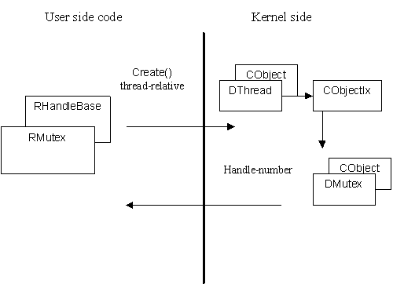

|
| |
A handle is a way in which a thread or process can identify an object that is owned or managed by another thread or process. Such objects are Kernel side objects.
A handle uses a number, the handle-number, to identify the associated Kernel side object. The handle, an instance of a RHandleBase derived class,
encapsulates the handle-number.
The objects referred to by handles are always instances of CObject derived classes, i.e. they are reference counting
objects. The handle-number is created when the object is created (or opened, if the object already exists) and added to an object
index.
Typically, calling Open() or Create() or a similarly named function on an RHandleBase
derived class causes the
associated object to be created or opened and added to an object index, owned either by the thread or the process. Adding the
object to the object index creates a handle-number and this is returned to, and encapsulated by, the handle.
For example, RMutex is the handle for a mutex; all
user side interaction with a specific mutex is directed through an instance of RMutex. The RMutex object exists on the
user side; the corresponding mutex (a DMutex object) exists on the Kernel side.

Here, code running on the user side constructs an RMutex and calls its Create() member function. This causes the
Kernel to:
construct the corresponding Kernel object, a DMutex
add the DMutex to the current thread's object index (a CObjectIx)
return the handle-number to the RMutex.
...
RMutex m;
m.Create();
...
See also:
Copyright ©2002 Symbian Ltd. 6.1-00174 |
|